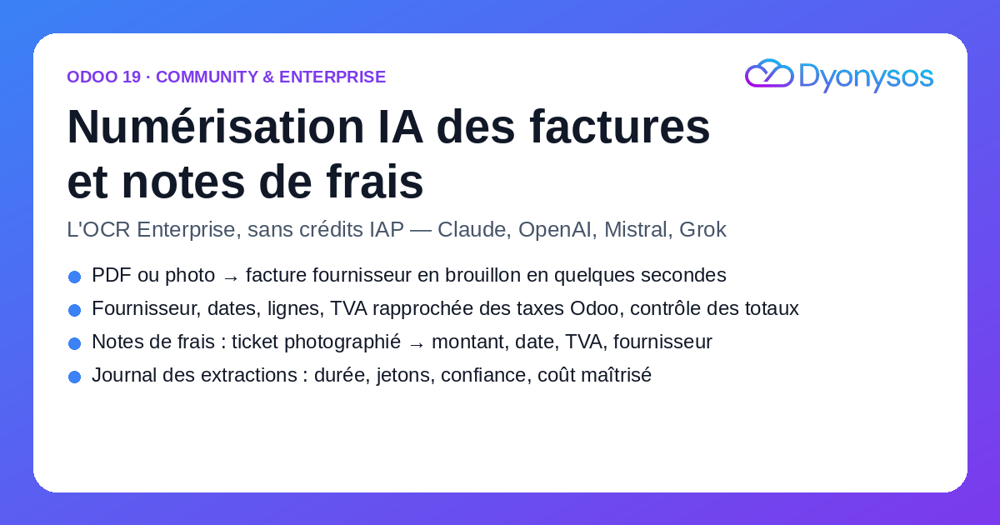
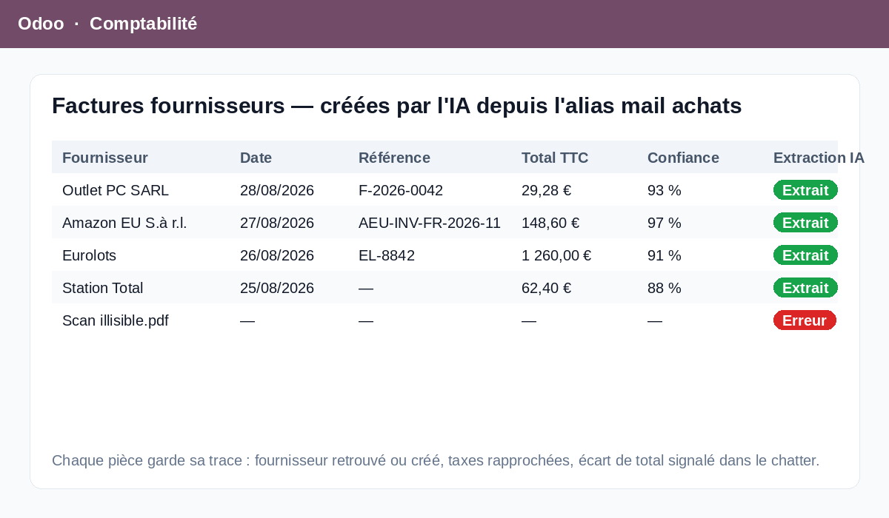

Chaque PDF ou image qui arrive sur un journal d'achats — par l'alias mail, par glisser-déposer sur le tableau de bord, ou en pièce jointe d'une note de frais — est lu par un modèle de vision (Claude, OpenAI, Mistral, Grok…). Le module crée la facture fournisseur ou la note de frais en brouillon : fournisseur retrouvé par TVA, email ou nom (ou créé), numéro, dates, devise, lignes avec quantité, prix et taux de TVA rapproché des taxes de votre société.
Le total calculé est comparé au total lu sur le document ; tout écart est signalé dans le chatter. Vous validez, Odoo comptabilise.

S'intègre au framework d'import d'Odoo : les XML Factur-X/UBL restent prioritaires, l'IA prend le relais pour les PDF simples, les scans et les photos. Bouton « Extraire par IA » pour relancer à la demande.
Photo d'un ticket → libellé, date, montant TTC, TVA incluse, fournisseur. Compatible avec le bouton « Scanner » de l'application Notes de frais et l'alias mail.
Vous utilisez votre propre clé API : quelques centimes par document, aucun abonnement. Un journal des extractions garde durée, jetons consommés, confiance et données brutes.
Fournisseurs pris en charge : Anthropic (Claude), OpenAI, xAI Grok, Mistral, Ollama et toute API compatible OpenAI (les PDF sans couche texte nécessitent Anthropic ou une image).
Compatibilité : Odoo 19 Community et Enterprise. Dépend de account et hr_expense. Python : requests.
Développé par DYONYSOS — intégration Odoo, automatisation et IA pour PME.
Support : welcome@dyonysos.fr · dyonysos.fr